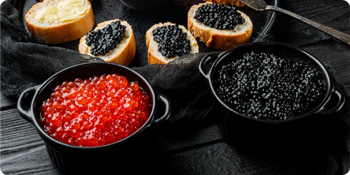
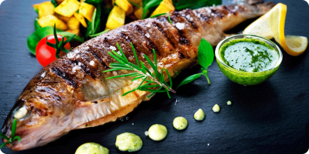

916-956-5019
2

Икра — название яиц рыб, активно используемых в кулинарии и потребляемых в пищу. Икра бывает черная, красная, икра минтая и синтетическая икра (суррогатный продукт). Красная икра — самая соленая из всех, получаемая от лососевых рыб. Черная икра (от осетровых) — самая редкая и дорогая, считается деликатесом.
Кра́сная ры́ба — общее название деликатесных видов рыбы из семейства осетровых. В обиходной речи часто применяется к лососёвым, обитающим на Дальнем Востоке, а также в Баренцевом и Белом морях: сёмга, форель, горбуша, кета, нерка, так как мясо многих из них имеет различные оттенки красного или красно-розового цвета.
Нежирная и вкусная пресноводная рыба, которая обитает в верховьях ручьев, но также часто разводится на фермах. Самыми вкусными являются кумжа и яровая форель. В ней много костей, которые следует удалить с мяса перед жаркой пинцетом. Однако, при жарке тушки, это не обязательно - форель очень легко съесть, ведь под хрустящей кожицей гость обнаружит прослойку сочного мяса, а только под ней позвоночник и кости.
